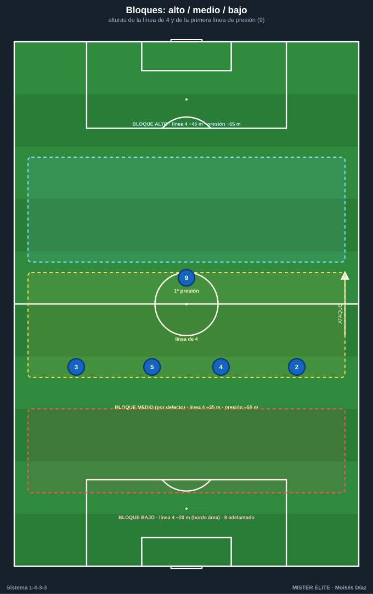
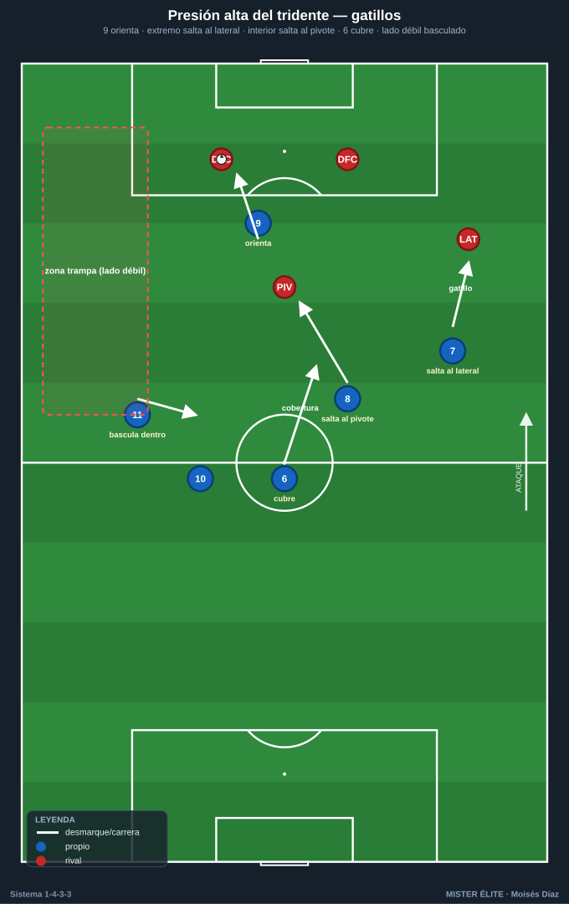
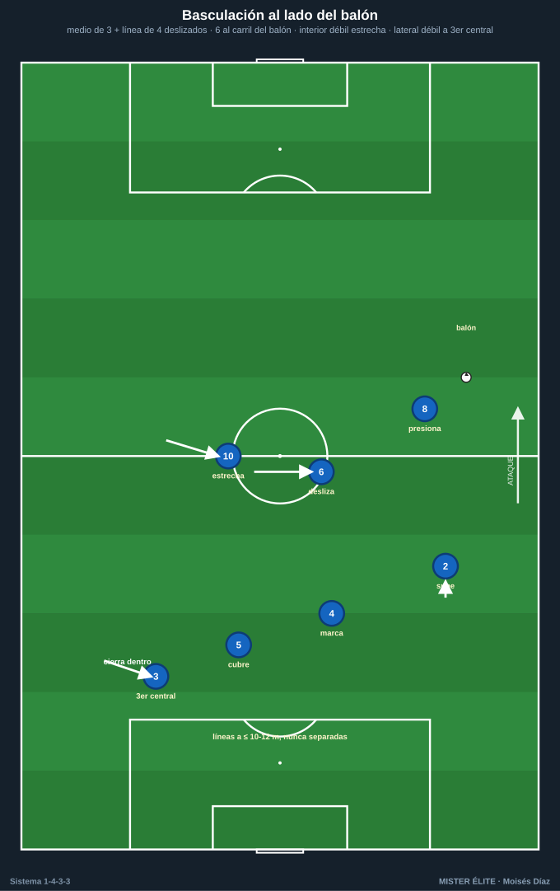
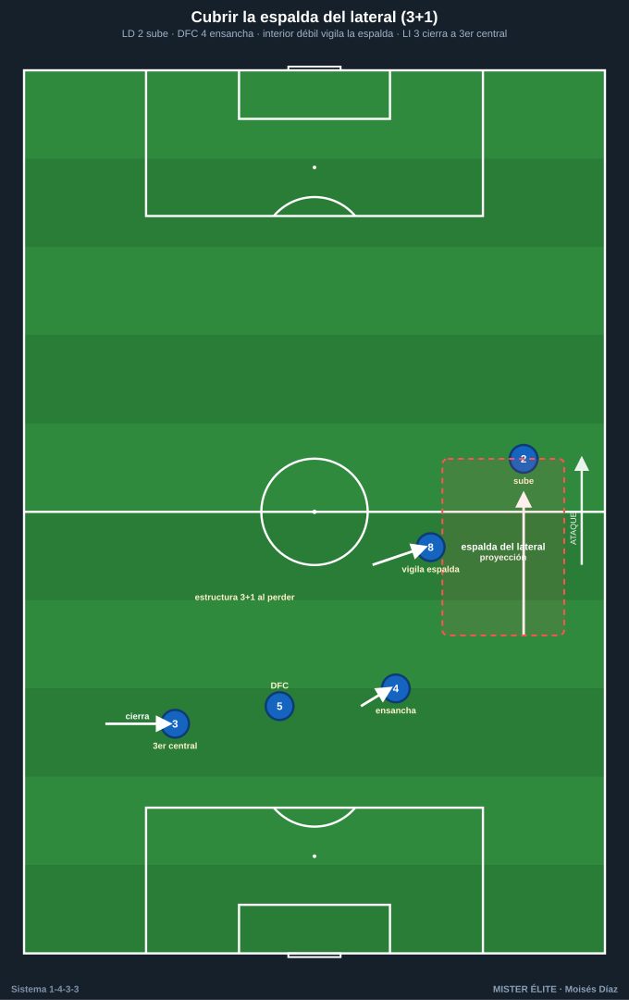

Módulo 02 · Fase defensiva del 1-4-3-3
Nomenclatura: POR 1 · LD 2 · LI 3 · DFC 4/5 · pivote 6 · interiores 8/10 · ED 7 · DC 9 · EI 11.
El 1-4-3-3 defiende con tres líneas horizontales que, al replegar, se convierten en dos líneas cerradas (1-4-5-1 / 1-4-1-4-1) bajando los extremos 7 y 11. Es un sistema de densidad central (medio de 3 + 9) y presión orientada. Sus dos talones de Aquiles: el espacio a la espalda de los laterales y el 1v1 del pivote 6 cuando los interiores abandonan el eje.
1. Roles defensivos por demarcación
- POR 1: defiende el espacio a la espalda de la línea de 4 (segunda barrida) con bloque alto/medio; manda el achique y el fuera de juego con la voz; 1v1 si se filtra la espalda de los laterales.
- DFC 4 y 5: pareja de marca/cobertura (uno sale al 9 rival, el otro cae en diagonal); defienden el centro y la zona de remate; coordinan achique y fuera de juego con el POR. El del lado fuerte sigue al delantero, el del lado débil vigila el segundo atacante y el balón filtrado.
- LD 2 / LI 3: 1v1 contra el extremo rival (defender de costado, orientar a la línea); vigilan el intervalo lateral-central; saltan al lateral rival como gatillo cuando el tridente bascula; repliegan a la línea de 4 cerrada (el lado débil cierra a "tercer central").
- MC 6: tapa el espacio entre líneas (en la sombra del 9 rival); cobertura permanente de la defensa (si un lateral salta o un central se rompe, baja a tapar como tercer central temporal); ancla del contrapressing. No abandona el eje sin relevo de un interior.
- MC 8 / 10: doble esfuerzo (saltan al pivote/central rival arriba y basculan atrás a defender el ancho); cierran carril interior y semiespacio; relevan al 6 si este sale; al replegar forman la línea de 5.
- Tridente 7-9-11: el 9 es primer presor y orienta la salida tapando el pase al pivote rival; los extremos parten cerrando el interior y saltan al lateral (gatillo). Al perder la posición alta, bajan a la línea de medios (1-4-5-1) y ayudan al lateral. Primer eslabón del contrapressing.
2. Bloques: alto / medio / bajo
| Bloque | Línea de 4 | Primera línea de presión | Idea |
|---|---|---|---|
| Alto | ~40-50 m | ~60-75 m (campo rival) | Robar arriba, achicar el campo; exige fuera de juego y POR-líbero. |
| Medio | ~30-40 m | ~50-60 m (centro del campo) | Replegado pero activo; invita a la salida y activa gatillos al pasar el medio. Bloque por defecto del 4-3-3. |
| Bajo | ~18-25 m (borde del área) | 9 adelantado; resto muy junto, ~30-40 m | Defender el área y la profundidad, salir al contragolpe. Entre líneas ≤ 10-12 m. |

Repliegue a 1-4-5-1 / 1-4-1-4-1
Cuando no hay opción de robo arriba, los extremos 7 y 11 bajan a la línea de medios: - 1-4-1-4-1: el 6 queda como único pivote por delante de la defensa; 8-7 y 10-11 forman la línea de 4 medios. Protege el centro y filtra al área. - 1-4-5-1: los cinco medios juntos en un bloque plano; el 9 queda arriba como salida. - Regla: nunca repliegan ambos extremos a la vez si solo hay un foco de balón; primero baja el del lado fuerte; el del lado débil cierra el carril central.
3. Pressing y contrapressing
Presión alta del tridente — gatillos
Estructura: el 9 presiona a la pareja de centrales; los extremos 7/11 cubren a los laterales rivales; el 6 vigila al pivote contrario; los interiores 8/10 vigilan a los interiores rivales (emparejamiento casi hombre a hombre con coberturas escalonadas).
- 9 orienta: el 9 ataca a un central tapando con su cuerpo el pase al pivote rival → cierra un lado (presión orientada, no frontal).
- Extremo salta al lateral: cuando el central juega a su lateral, el extremo de ese lado salta a presionar; señal de "lado fuerte".
- Interior salta al pivote: si el balón llega al pivote rival, el interior del lado del balón salta; el 6 cubre el hueco.
- Pase a presión: cualquier pase lento, atrás o de espaldas → todo el bloque aprieta una línea.
Coberturas durante la presión: cuando el extremo salta al lateral, el lateral propio sube un peldaño a vigilar al extremo rival y el interior cubre por dentro. Cuando el interior salta al pivote, el 6 baja al eje y el otro interior estrecha. El lado débil bascula hacia dentro (extremo + interior + lateral cerrados) dejando el flanco lejano como "zona trampa".

Contrapressing (presión tras pérdida)
- 5 segundos: los más cercanos (tridente + interior) cierran al portador y las líneas de pase cortas; el resto sube para comprimir.
- El 6 orienta la reacción y tapa el pase de salida al centro; los interiores saltan a los apoyos próximos.
- La línea de 4 sube sincronizada (no se repliega: presiona) para dejar al rival en fuera de juego.
- Si no se recupera en la ventana → falta táctica o repliegue ordenado al bloque medio.
4. Basculación
Mediocampo de 3: bascula en bloque hacia el lado del balón formando un triángulo móvil. El interior del lado del balón sale/presiona; el 6 se desliza al carril central-lado del balón; el interior del lado débil se estrecha hacia el centro (no se queda en su banda). Distancias internas cortas (8-12 m).
Línea de 4: bascula en diagonal (escalera). El lateral del lado del balón sube; los dos centrales se deslizan (uno marca, otro cubre); el lateral del lado débil cierra hacia dentro casi como tercer central.
Sincronía: ambas líneas se mueven juntas; nunca se separan más de 10-12 m (si no, aparece el espacio entre líneas).

5. Espalda de los laterales — el punto débil y sus soluciones
El espacio a la espalda del lateral que sube y el 1v1 del 6 son las dos zonas a proteger:
- Cobertura escalonada del lado contrario: cuando un lateral sube, el central de ese lado ensancha, el interior del lado débil vigila la espalda y el lateral contrario cierra a tercer central (defensa en 3+1 al perder).
- Subida alterna de interiores: regla "un interior arriba, un interior abajo" — solo uno llega al área; el otro queda al lado del 6.
- Pivote que cae a tercer central en salida y, al perder, repliegue del 6 a proteger la espalda del lateral subido.
- Repliegue inmediato del extremo sobre su lateral (regla del 1-4-5-1): gatillo = pérdida o rival superando la primera línea.
- Falta táctica / temporización del 6 o del interior en el carril central tras la pérdida.
- Bloque medio por defecto (no alto permanente) contra rivales verticales con extremos rápidos.

6. Achique, fuera de juego y defensa de carriles
- Achique: cuando el balón va atrás/de costado, toda la línea sube con la presión; cuando el rival progresa o juega largo, cae junta y compacta (bloque < 30-35 m).
- Fuera de juego: trampa coordinada por el central del lado del balón con voz; subida en bloque al pase atrás/lateral. Requiere línea recta y POR-líbero. No abusar contra equipos que atacan la profundidad con timing.
- Defensa de carriles: densidad central (cierra los 3 carriles interiores con el medio de 3 + 9) e invita por fuera; al llegar el balón a banda, salta el extremo/lateral y se cierra el semiespacio.
- Defensa del centro: prioridad absoluta — el eje (6 + centrales + 9) protege la zona de remate. El pase interior solo se concede como "trampa" para robar en la siguiente acción.
Ideas clave
- El 1-4-3-3 defiende por densidad central e invita por fuera; presión orientada, no frontal.
- Gatillos: extremo→lateral, interior→pivote, 9 orienta; cada salto lleva su cobertura.
- Repliegue a 1-4-5-1 / 1-4-1-4-1 con los extremos bajando.
- Proteger siempre la espalda del lateral y el 1v1 del 6 (subida alterna de interiores).
- Líneas a ≤ 10-12 m; reacción al perder en la ventana de 5 s o repliegue/falta.
Errores comunes
- Presionar de frente sin orientar: el rival cambia de banda y rompe la presión.
- Saltar 8 y 10 al pivote a la vez y dejar el eje abierto.
- Que los extremos no bajen a tiempo: el lateral defiende 2v1.
- Línea de fuera de juego rota (escalera) que regala la espalda.
- Mantener bloque alto permanente contra extremos rápidos en vez del bloque medio por defecto.